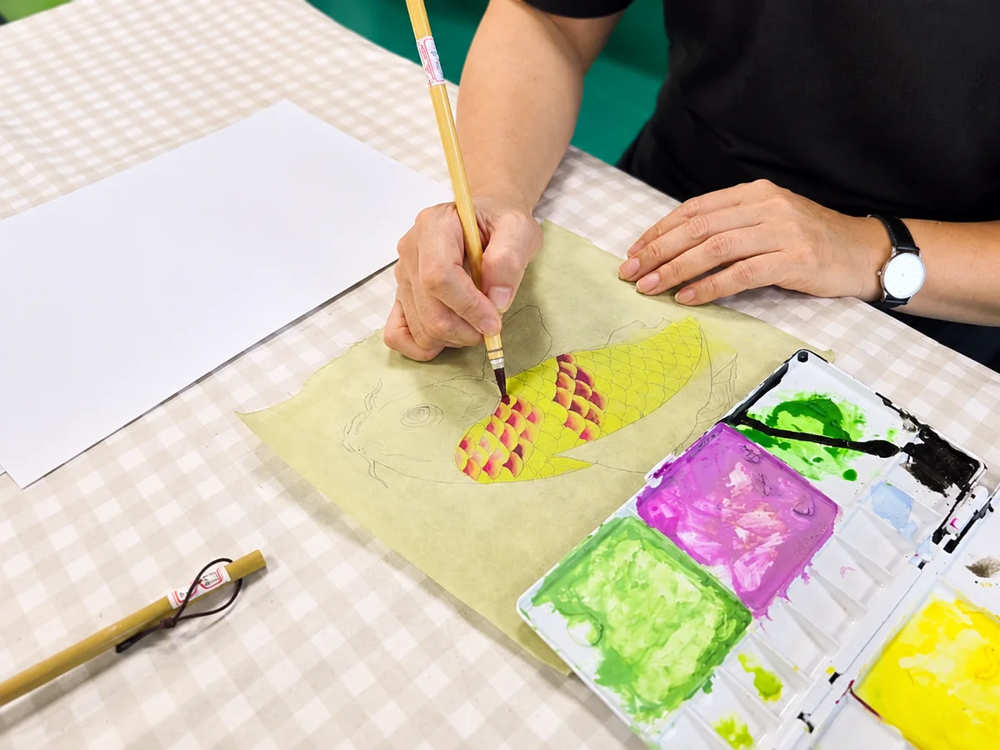
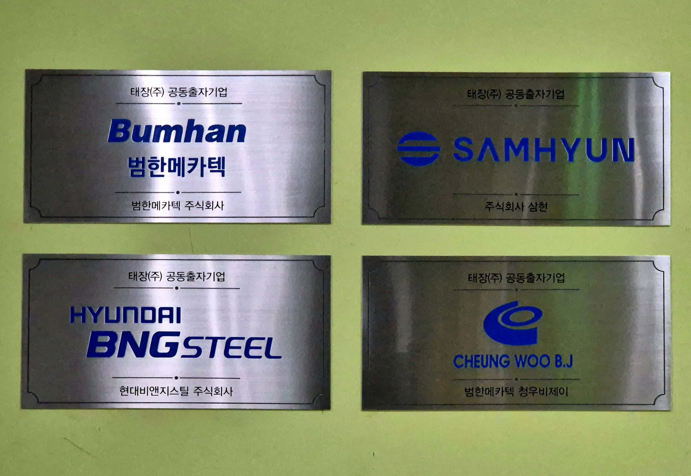
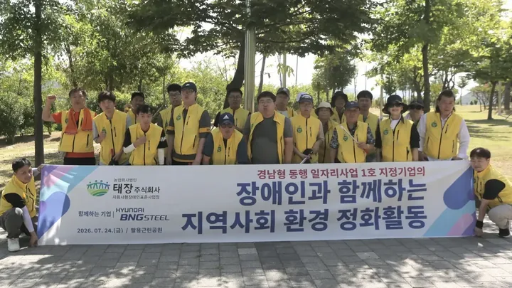

사업의 기반을 함께 만듭니다
참여기업주주로 출자 태장
참여기업이 주주로 참여하여 태장의 사업 기반을 함께 만듭니다. 출자 조건은 기업별 참여 검토와 협의로 정합니다.
태장은 기업들의 공동출자를 바탕으로 장애인 일자리를 운영하는 자회사형 장애인 표준사업장입니다. 실제 사업과 협력을 통해 일자리가 이어질 기반을 함께 만듭니다.
자회사형 장애인 표준사업장 인증 기록 →
출자, 상품·용역 거래, 운영 확인은 서로 다른 관계입니다.
참여기업이 주주로 참여하여 태장의 사업 기반을 함께 만듭니다. 출자 조건은 기업별 참여 검토와 협의로 정합니다.
별도 계약과 협의에 따라 업무를 맡기거나 상품을 구매하고, 태장이 수행·제공합니다. 출자금과 거래대금은 구분합니다.
태장은 근로자 고용과 직무·현장 운영을 맡습니다. 기업이 확인할 자료의 범위와 전달 방식은 출자·거래 관계와 개별 협의에 따라 정합니다.
참여기업마다 거래 범위와 운영 확인 조건이 같지는 않습니다. 공개된 활동 기록은 아래에서 확인할 수 있습니다.
공동출자기업으로 참여하여 일자리와 사업의 기반을 함께 만들고 있습니다.

공개된 활동 기록으로 준비와 수행 과정을 살펴보세요.

태장 임직원이 함께 주변 환경을 정비했습니다. 공개 기록에서 확인되는 준비와 수행 과정을 소개합니다.
활동 전 안전수칙과 이동 방법을 확인했습니다.
담당자의 안내에 따라 주변을 정비했습니다.
활동 일자와 내용을 홈페이지에 사진과 함께 남겼습니다.
이 사례는 공개된 지역사회 활동 기록입니다. 기업에 제공할 수행 결과·증빙 자료는 업무 범위와 계약에 맞춰 별도로 협의합니다.
함께하는 절차와 자주 묻는 질문을 확인해 보세요.
출자 참여인지, 사업 협력인지 필요를 나눕니다.
참여 요건, 수행 범위와 일정 등을 함께 살핍니다.
출자와 거래의 조건·비용·확인 자료를 구분합니다.
확정한 범위와 역할에 맞춰 협력합니다.
출자는 주주로서 태장의 사업 기반에 참여하는 관계입니다. 상품 구매와 용역 의뢰는 정한 업무·상품을 제공받는 별도의 거래입니다. 두 관계는 함께 있을 수 있지만, 거래만으로 출자 참여가 되는 것은 아닙니다.
태장은 근로자 고용, 직무 설계와 현장 운영을 맡습니다. 참여기업은 출자 참여 여부와 조건을 검토합니다. 업무를 의뢰하는 기업과는 수행 범위·일정·확인 기준을 협의하며, 책임과 역할은 각 계약에서 구체화합니다.
출자금은 주주 참여를 위한 자금이고, 상품·용역 대금은 발주와 수행에 대한 거래 비용입니다. 반복 거래의 범위·금액·정산 방식은 출자 조건과 분리해 검토합니다. 개별 금액, 계약기간과 변경 조건은 협의 대상입니다.
홈페이지의 일터·활동 기록에서 공개된 업무와 현장 모습을 확인할 수 있습니다. 개별 기업에 필요한 운영 현황, 수행 결과와 증빙의 범위·전달 방식·주기는 출자·거래 관계에 맞춰 정합니다. 모든 기업에 동일한 보고 조건이 적용되는 것은 아닙니다.
문의로 참여 목적을 확인한 뒤 구조와 업무 범위를 검토하고, 조건을 협의해 합의한 범위에서 진행합니다. 공동출자 검토에는 제도 요건과 기업별 적용 가능성 확인이 포함됩니다. 일반 상품·용역 협력은 업무 내용·일정·제공 조건 중심으로 검토합니다.
회사·기관명, 회신받을 이메일, 참여 목적이나 필요한 업무, 희망 시기를 알려주세요. 완성된 제안서나 상세 인원명부·장애정보·재무자료는 첫 문의에 필요하지 않습니다. 농장 협력은 희망 작업과 지역을 함께 적어주시면 됩니다.
완성된 제안서가 없어도 검토 중인 업무와 희망 시기를 알려주시면 함께 가능성을 살펴봅니다.
필수 항목만 작성해 보내면 태장 담당자가 확인 후 연락드립니다.
표시는 필수 입력 항목입니다.